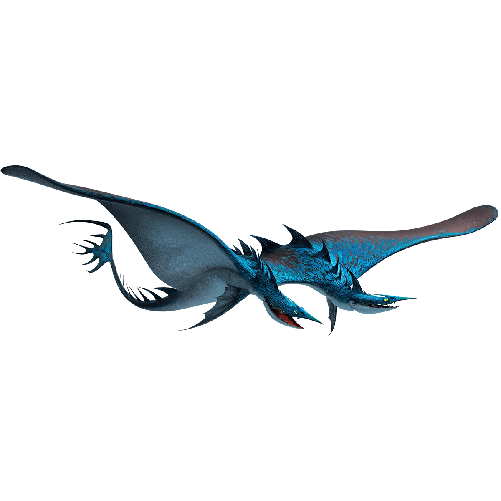

Le dragon aquatique aux jets d'acide brûlants
| Catégorie | Corrosifs |
| Type de feu | Jets d'acide corrosif |
| Taille | 10 mètres |
| Envergure | 12 mètres |
| Poids | 2 500 kg |
| Couleur | Vert, turquoise |
| Apprivoisable | Oui |
L'Horreur des Mers est un grand dragon marin capable de propulser un jet d'acide très corrosif à longue distance. Excellent nageur, très rapide dans l'eau, il est à l'aise aussi bien en mer qu'en vol. Son long cou lui permet d'attraper ses proies avec précision. Il peut aussi distiller l'eau de mer en jet acide en filtrant le sel pour le concentrer en projectile corrosif.